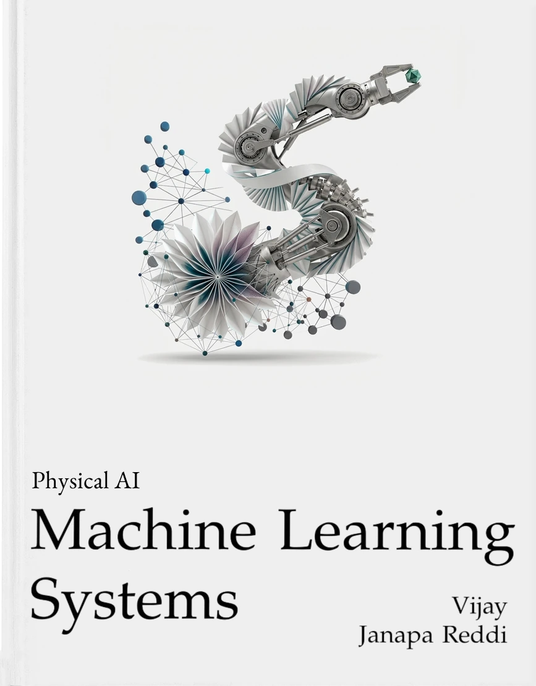

Физический ИИ
Системы машинного обучения, которые чувствуют и действуют
Это активный проект. Системы физического ИИ соединяют изученные модели с приводами, которые перемещают массу, создают крутящий момент и взаимодействуют с физическим миром. Когда заученное предложение пересекает причинную границу физической силы, задержка становится пройденным расстоянием, и выполненная работа не может быть повернута назад.
В этой книге воплощенная система строится в том порядке, в котором ее диктует физика: пределы тела, обученные предлагающие, детерминированное разрешение, сенсомоторное обучение, выполнение в реальном времени и основанное на фактических данных управление, рассматривая физическое воплощение как дисциплину архитектурных систем.

физический ИИ
Системы машинного обучения, которые чувствуют и действуют
Виджай Джанапа Редди
Что вы узнаете
Книга открывается вступлением о том, что цены задерживаются на причинной границе, определяет пять уровней воплощенной машины и устанавливает четыре управляющих закона: необратимость, эндогенные данные, предложение не является разрешением, а разрешение необходимо заслужить. Затем четыре части строят систему по порядку:
- Часть I: Анатомия машины превращает физические ограничения в вычислительные бюджеты, измеряя, что тело может выдержать, что могут предоставить образованные предлагающие, и как путь разрешения координирует их.
- Часть II: Обучение машины собирает демонстрации, тренирует сенсомоторные стратегии замкнутого цикла и оценивает поведение, при котором действия выбирают последующие наблюдения.
- Часть III: Запуск машины следует за датированными измерениями датчиков посредством восприятия, оценки состояния, намерения и планирования для принудительного исполнения во время выполнения на оборудовании реального времени.
- Часть IV: Управление машиной проектирует вмешательство человека, проверяет устойчивость к возникающим неисправностям, строит обоснование безопасности, которое оправдывает физическую эксплуатацию, и называет тех, кто отвечает за каждое решение, стоящее за ним, и за людей, на которых влияет машина.
Предварительные требования
Читатели должны иметь базовые навыки программирования на Python, интуитивное понимание обучения и вывода машинного обучения, а также знание элементарной ньютоновской механики, линейной алгебры и базовых вероятностей. Книга не предполагает более раннего тома этой серии и развивает необходимые концепции управления, оценки и систем реального времени, исходя из первых принципов.